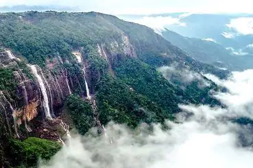
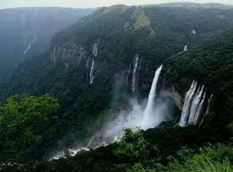

Meghalaya is a beautifull state of india. Located in the northeastern part of the Country. It is bounded by the Indian state of assam to the north and northest and by Bangladesh to the south and southwest.The State Capital is the hill town of shilong, located in east-central meghalaya. Meghalaya Population in 2021 is estimated to be 3.44 million. Meghalaya is home to the Khasi,Jaintia and Garo tribes. Jainsem is the traditional costume for women and is usually made of mulberry silk, a local Specialty. Over the jainsem, they wear cotton shawls called tap-moh Khlieh. Garo women can be seen wearing eking ---- a wrapround. The main ethnic communities of Meghalaya include khasis, Garo, and Jaintia. It is believed thet people from these communities came to Meghalaya from South East Asia. The People of Meghalaya are Known for their cherful nature and adaptability.
Explaination

Shad Suk Mynsiem is held during the month of april. Spring is symbolic as a season of rebirth, as the case in many societies. It signifies the begininning of new cycle during which new seedling are planet. The biggest visual highlight of Shad Suk Mynsiem is the dance and accompanying music. The female dancers are clad in the best silk, and adorned with gold, coral, & silver accesories. The Crown represent dignity and modesty. Chastify of the dance is represented by the lasubon flower, an important totem for the hynniewtrep clans. Where:Shad Suk Mynsiem is the most important festival of the Khasi clans of Meghalaya. It also celebrate by the Jaintia and Garo clans of Meghalaya. This festival is celebrate in April, Every year. Shad Suk Mynsiem in Meghalaya 2021 dates: 9th December .
Explaination
Nongkrem dance festival, an annua event during which prayers are offered for good harvest, peace, and prosperity of the community was celebrated with great zeal and anthusiasam by the inhabitants of the khasi hills in shilong, Meghalaya. A five day long religious festival of the khasi, ka pomblang Nongkrem dance is populary knoens as Nongkrem dance. Where: Smit, the cultural of the khasi Hills in Meghalaya. What to expect: The Nongkrem is dance festival. When is Nongkrem celebrated: November Nongkrem 2021 dates:November.
Explaination
Behdeinkhlam Festiva is the most celebrated culture festival among the pnars. Behdeinkhlam (Chasing away the demon of cholera) is celebrated annually in july after the sowing. Period, the most important dance festival of the Jaintia tribes. The festival tour is also an invocation to god, seeking his blessing for a bumper harvest. Where: Behdeinkhlam is probably one of the most famous festival in Jowai,Jaintia hills of Meghalaya. What to expect:During the Behdeinkhlam cultural festival tour, Young men make a symbolic gesture of driving away of the evil spirit, Plague and disease by beating of the root of Every house with bamboo poles. The climax of the celebration is the fight for a large undressed beam by two group of people in opposition to each other. When is Behdeinkhlam celebrated: Behdeinkhlam is celebrated annually in july after the sowing period. Behdeinkhlam 2021 dates: 11 July 2021.

Explaination
Nohkalika Falls is the tallest plunge Waterfall in India. Its height 1115feet (340m0). The Waterfall is located bear cheerapunji, one of the wettest place on earth. Nohkalika falls are fed by the rainwater collected on the summit of a comparatively small plateau and decrease in powerduring the dry season in December-February. Beloiw the Falls there has formed a plunge pool with unusual green colored water. So given all of the above factors, it seemed pretty clear to us that Nohkalika Falls was the pride of Meghalaya tourism, and it appeared to get a fair bit of infrastructure to make in a nicer place to visit, especially for a place this remote Where:The waterfall is located near cheerapunji.
Explaination
The Elephant Falls are a two-tier waterfall in shilong. Meghalaya, India. The mountain stream descends throught two successive falls set in dells of fern-covered rocks. Elephant falls was the British name of what the local khasi people once reffered to as a kshaid lai pateng khohisiew (or "Three steps Waterfalls") since the falls actually consisted of three sections in succession. We learned from a sign here that the British renamed the Falls because there used to be arock resembling an elephant near the left side of the main falls (which i think was the bottommost one). Where:The Elephant Falls are a two-tier waterfall in Shilong, Meghalaya, India.
Explaination
Known is the Hawaijan language as Waianuenue (literally "Rainbow Water"). The falls flows over a natural lava cave. The mythological home to Hina, an ancient Hawaijan goddess. Rainbow Falls derives its name from the fact that, on sunny mornings around 10:00 a.m. , Rainbows can be seen in the mist thrown up by the waterfall. At a distance of 18km from Cherrapunji, Rainbow falls is a serene waterfalls located near Nongriat Village in cheerapunji, Meghalaya. Situated near Double Decker Root Bridge, It is one of the famous waterfalls in Meghalaya and among the popular places to visit in cheerapunji. Where: Nohkalika Rd,cheerapunji,Meghalaya.

Explaination